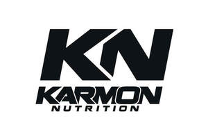

Trade Mark Journal No.2025/039 26 September 2025
UK00004264858 16 September 2025 (5,29,35)

- Class 5
- Antioxidant pills; Antioxidants; Appetite stimulant preparations; Appetite suppressant pills; Appetite suppressants; Casein dietary supplements; Cod liver oil; Dietary supplemental drinks; Dietary supplements; Dietary supplements for humans and animals; Digestants; Digestive enzymes; Diuretics; Enzyme dietary supplements; Food supplements for dietetic use; Foodstuffs for diabetics [specially made for]; Glucose dietary supplements; Meal replacement powders; Medicated isotonic drinks; Mineral food supplements; Nutritional supplements; Protein dietary supplements; Slimming pills; Vitamin drinks; Vitamin preparations; .
- Class 29
- Beverages consisting principally of milk; Beverages made from or containing milk; Butter (Peanut -); Drinks made from dairy products; Milk and milk products; Milk based beverages [milk predominating]; Milk based drinks [milk predominating]; Milk beverages; Milk beverages, milk predominating; Milk shakes; Peanut butter; Protein milk; .
- Class 35
- Retail and online retail services connected with the sale of, foods in the form of nutritional supplements containing vitamins, herbal preparations for medical purpose, herbal supplements, herbal extracts, herbal beverages, vitamins, vitamin preparations, vitamin food supplements, minerals, mineral food preparations, mineral food supplements, protein preparations and supplements, creatine preparations and supplements, vitamin food supplements, vitamin and mineral supplements, food supplements, food supplements in the form of beverages and powdered drink mixes, nutritional additives and supplements, nutritional preparations, dietary supplements, dietary food supplements, tonics, preparations and substances for use in the treatment of obesity, slimming aids, preparations for promoting weight loss, preparations for promoting weight gain, preparations for promoting muscle gain, protein-based drinks, compositions for the preparation thereof, creatine based drinks, whey-based drinks, compositions for the preparation of protein-based drinks, dietary beverages, compositions for the preparation of dietary beverages, milk products, whey, dairy products, proteins and protein supplements for human consumption, creatine supplements for human consumption, protein bars and snacks, nutritional bars, beverages based on milk protein, compositions for the preparation of beverages based on milk protein, vitamin, protein and mineral enriched foods and foodstuffs; .
Karmon Nutrition Ltd
Representative: Eamonn Manning